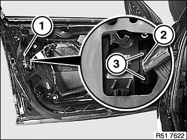
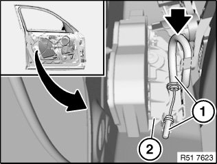
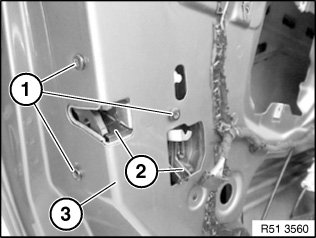
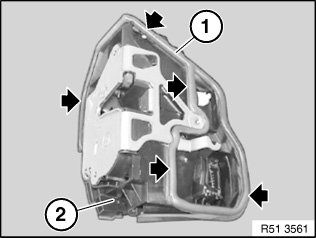
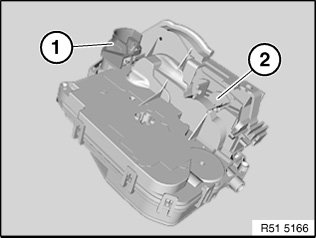
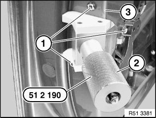
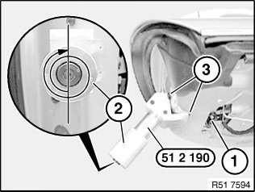

51 21 090 Removing and Installing/Replacing Door Lock In Left or Right Front Door
51 21 090 Removing and installing/replacing door lock in left or right front door
Special tools required:

Necessary preliminary work:
- Remove rear section of power window unit
Driver's side only:
- Remove lock barrel

Unclip locking rod (1).
Unlock and disconnect plug connection (2) at tabs (3).

Unhook Bowden cable (1) from door lock (2).
If necessary, release cable holder on door lock (2).
Installation note:
Bowden cable (1) must be correctly engaged in locators in door lock (2).
Bowden cable (1) must be laid without kinks in bend to door lock (2).
IMPORTANT:
- Door cannot be opened if Bowden cable (1) is incorrectly laid.
- Do not damage door lock seal when removing.

Release screws (1).
Remove door lock (2) from inside.
Installation note:
Pull door lock (2) with special tool into corner (3).
IMPORTANT: Observe the following notes on installation without fail in order to avoid leakage and electrical malfunction.

Installation note:
Gasket (1) on door lock (2) must not be damaged.
E90/E91 driver's side only:

NOTE:
- Cover (1) protects against water ingress.
- In event of problems with frozen door locks/lock barrels:
- If necessary, retrofit cover (1) on door lock (2).

Installation note:
- Install door lock and insert screws (1), do not tighten down.
- Slide special tool 51 2 190 into opened rotary striker until striker engages in first stage

Installation note:
- Pre-tension door lock (1) with knurled screw (2) until special tool 51 2 190 just contacts corner points (3)
IMPORTANT:
- Risk of damage.
- To tension door lock (1), it is only permitted to turn knurled screw (2) by a further 1 to 1.5 turns (max.).
- Door lock seal must rest uniformly on inner door panel (water ingress).
- Tighten down door lock screws, tightening torque 51 21 1AZ.